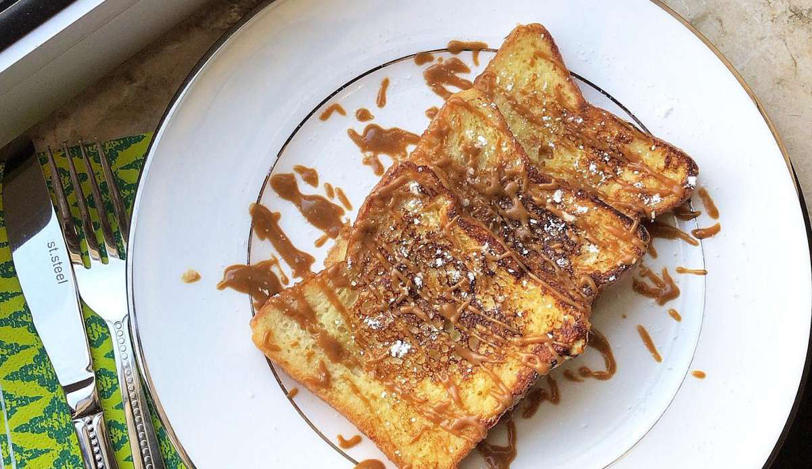

Biscoff French Toast
Ingredients
- 73 g Bread White Thick (Mighty Soft)
- 2.0 biscoff Biscuits
- 1.0 egg (Extra Large)
- 20 ml Almond Milk
- Unsweetened (Almond Breeze)
- 20 ml Thickened Cream Light
- 10 g Maple Syrup Sugar Free (Queen)
Instructions
- Blitz the Biscoff biscuits in a blender to make a crumb, don't blitz for too long as you want to keep some texture
- Whisk the eggs with the almond milk and 1/2 of the Biscoff crumb
- Whip the cream with the rest of the Biscoff crumb and add maple syrup
- Place the bread into the egg mixture soaking it on both sides
- In a nonstick frypan, on med heat, sprayed lightly with oil place the egg soaked bread and cook for 3-4 min on each side or until golden brown
- Serve the french toast with the Biscoff cream on top and any left over cumb you have
Source PDF page 11